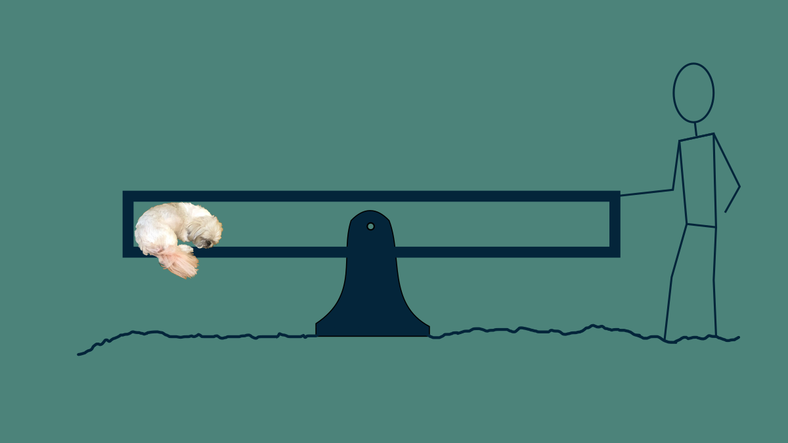
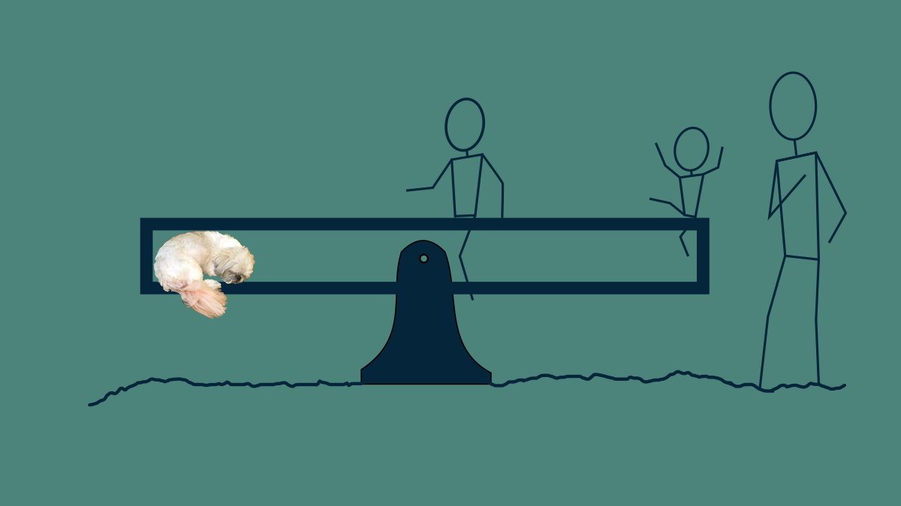
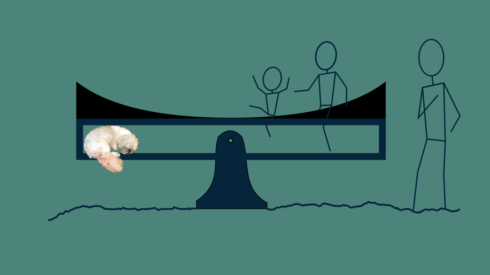
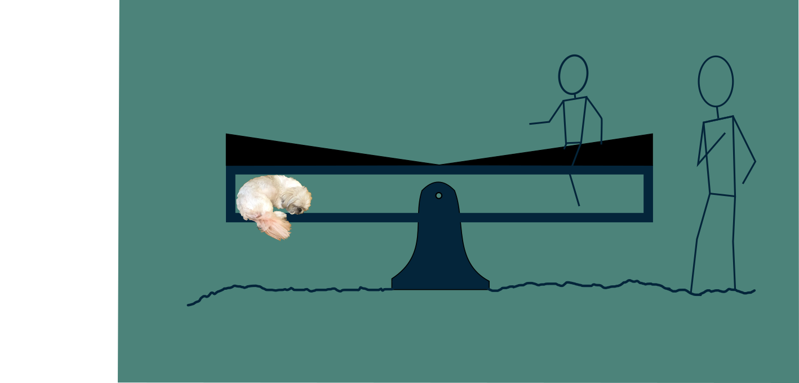

Sometimes, when we train a model on our data the coefficients don’t look like we think they should. They might be too big or not sparse enough. When this happens, we can add a fudge factor to nudge the parameters in a direction that is more pleasing. This sounds horribly crude, so mathematicians have taken to calling it regularization.
There are good reasons for using regularization, in addition to aesthetics. The need usually crops up when we are using a model that has too many parameters, too many degrees of freedom, for our data to robustly identify. The way this plays out is that the model ends up fitting not just the signal in our data, but the noise as well. The model is so powerful, so flexible, so expressive, that it captures not just the underlying phenomenon, but also the quirks of how it was measured and other unintended sources of interference. This is bad if we want to use our model to make predictions on previously unseen data. While the underlying patterns will be the same, the sources of unmodeled variation and measurement noise will be different each time. As a result, models predictions will be inaccurate.
The other thing that can happen is that a modeling problem may be ill-posed, that is, there may be many solutions, many combinations of parameter values, that all give an equally good fit. The problem isn’t well-defined enough to have a single best solution. Adding a regularization term is a way to give it just enough extra structure that it can find a single best option.
There are two types of regularization that occur most often in machine learning models. We can illustrate them by taking a trip to the park.
A Problem in Need of Regularization
Imagine you’re at the park with a dog and two children. The dog immediately climbs into a snug cubby under the seat of a seesaw and curls up. You push on the other side, rocking your pup until she falls asleep. You don’t mind staying there for the duration of her nap, but you left your phone in the car and would like to listen to a podcast while your doggo sleeps and your children play. But if you drop the seesaw to go get your phone, your pup will wake up. You are in a pickle.

Photo Credit: Diane Rohrer
To get out of it, you enlist the help of the children. You ask them to come climb on the seesaw and sit for a moment so that you can run to the car. The smaller child climbs on first and get situated in the seat near the end where you are holding it. Then the larger of the two climbs on closer to the middle, balancing everything out. At that point, the problem is solved. The seesaw is balanced and you can step away.
After a moment's reflection you get concerned. The small child is not at all good at sitting still. She is right at the end of the seesaw, and a wiggle in the wrong direction will send her toppling off the back onto her head. Even though the current arrangement solves the problem you tackled, closer inspection of the solution shows that it’s not quite what you hoped.

In this particular problem, there are two parameters: the position of each child. Although having the small child at the far end of the seesaw solves the original problem, the parameter values you ended up with are troubling. Not to worry. You can adjust the problem and nudge the parameter values in a direction that you like. There are a lot of combinations of positions of the two children that would stabilize the seesaw. If the small scoots toward the fulcrum, and the bigger child scoots away from it a bit, the seesaw will remain balanced. This is an example of an ill-posed problem. It has many solutions that are equally good.
L2 Regularization
You have the kids jump off and start over. As a regularizer, you grab a conveniently parabolic shaped piece of playground equipment nearby with one hand, and lay it on top of the seesaw while continuing to hold the seesaw in place with the other. Now, the shape of this will naturally drive both children toward the middle of the seesaw, away from the extreme edge. However, in the neighborhood of the fulcrum it’s pretty flat and it doesn’t influence their position much.

With this in place, the two children get back on in a new configuration, both comfortably far away from the end of the seesaw, but still balancing out the weight of the sleeping dog.
L1 Regularization
You turn to run for your phone, but your instincts niggle again. Even in the middle of the seesaw, trusting the smaller child to stay put for 30 seconds is wishful thinking. What would be ideal would be a solution that only involved the larger child. To find this, you make use of yet another set of conveniently shaped playground equipment and add gently sloped ramps to both sides of the seesaw. The children jump on again, finding a balance point. Then as the smaller child wiggles, she naturally makes her way down the slope, eventually reaching the bottom. The larger child continues to shift away from the fulcrum to accommodate. By the time the small child reaches the middle, her weight isn’t helping to balance the seesaw at all, so she can safely jump off and pursue other interests. Now you have a solution relying only on the larger child, and you are comfortable grabbing your phone amd settling into that podcast for the duration of your puppy's nap.

The two differently shaped wedges represent two different strategies for regularization. What they have in common is that they add an extra element of challenge to the problem. Not only do the children need to find positions that keep the pup aloft, but they need to do it in a way that minimizes their discomfort sitting on a sloped surface.
In this problem, maintaining balance is a constraint, but there are lots of combinations of big and little child positions that will satisfy the constraint. It is ill-posed. To change this, we can add an optimization problem on top of it. We can seek a combination of positions that’s more desirable. One very common regularization criterion is to minimize the sum of the squares of all the parameters. This tends to result in parameters that are not too big.
When to use what
The square of our position parameters looks like the parabola that we sat on top of the seesaw the first time through. It shows how it may be uncomfortable to sit toward the ends where it is steep, and it will cause a child to migrate toward the middle, both to get comfortable and to comply with gravity. The formal terminology for the sum of the squares of the parameters is the Euclidean norm or L2 norm. Using the L2 norm as a regularization term is so common, it has its own name: Ridge regression or Tikhonov regularization. The name "ridge" comes from the way that, if you plot all the possible solutions to some problems in 3D, there is a diagonal line of solutions that are all equally good that looks like a mountain ridge. It's also known as weight decay, since in the absence of any other gradient-descending it results in a weight exponentially decaying toward zero, that is, it's rate of decay toward zero is proportional to it's distance from zero.
In some models, overfitting looks like lots of large parameter values. Keeping them all smallish and similarly-sized is an acceptable way to help the model fit the signal but not the noise
Another regularization term we can use is the sum of the absolute value of the parameter values. The official name for this is the Absolute-value norm or L1 norm. L1 regularization is also very common and has its own name, LASSO, a tortured acronym for "least absolute shrinkage and selection operator". Because it has a constant slope, it provides the same pressure to all parameters everywhere, driving them to zero. The result of this is that non-essential parameters tend to migrate toward zero and stay there. The resulting model is then sparse, the mathematical lingo for having lots of zeros. This is particularly useful in the case where your model is overly expressive and has more degrees of freedom then you need to represent the patterns in your data. Sparse parameters are also nice because the resulting models can be communicated more succinctly and calculated more quickly.
When postulating relationships between real world phenomena, L1 regularization also favors simpler explanations and solutions involving fewer causes. In the case of the seesaw, it freed up one child from participating at all.
There’s no reason not to use both L1 and L2 regularization at the same time. This combination is also common enough to have its own name: Elastic Net. It both provides a soft boundary keeping for parameters from getting too large, and nudges them toward zero where they can afford to go there without hurting the model's performance too badly.
Heads-up
A couple of notes when applying regularization: These methods assume that all parameter values have about the same influence. The L1 and L2 norms treat all parameters as if they were about the same scale. This is approximately true in linear regression an logistics regression if you normalize all of your variables beforehand, say, to have a mean of zero and a standard deviation of one. It’s also mostly true for deep neural networks within a single layer. However, it’s not true for models where parameters have very different influences, like polynomials, or almost any domain specific model. Use with caution. If you don’t, regularization will end up robbing you of what could have been a great solution. It will end up degrading your model dramatically.
Also, keep in mind that there is nothing magical about L1 or L2 regularization. They are convenient. They are glorified fudge factors. Feel free to implement any other regularization terms or tools that you deem appropriate. When we’ve started adding regularization, we’ve left the realm of principled modeling, and moved solidly into the practice of hand crafting a model that suits our needs.
There are other types of regularization in use. Feel free to check out the Regularization wiki page for some examples. You can even do things as simple as instituting hard limits for parameters or introduce discrete logic for setting parameters to a fixed value under certain conditions. If you can justify it to whoever is going to be using your model, then that’s all you need.
Regularization in Neural Networks
Ready to see how to use regularization in a neural network? Join me over in Course 313, Neural Network Methods There we will write both L1 and L2 regularization from scratch in Python in a lightweight neural network. It's a good time.